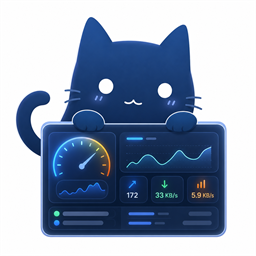

OPENCLASH 控制台
...
--:--:--
代理策略组
0
延迟排序
--
选择节点
测速
外观与连接
保存
外观
默认中文显示，可切换双主题。
液态玻璃
透明、柔光、苹果风
深色极简
近黑、冷蓝、低亮玻璃
中文
English
控制端
这些信息来自 OpenClash / Mihomo API。
如何找到控制面板地址和密钥
进入 OpenClash 的运行状态页，右侧“控制面板”卡片里可以复制地址和密钥。
打开 OpenWrt / 路由器后台，进入 Services → OpenClash。
切到“运行状态”，找到右侧的“控制面板”。
复制绿色地址，例如 192.168.9.1:9090，填入路由 IP 和 API 端口。
点锁形按钮复制密钥，粘贴到 Secret。也可以直接粘贴 Bearer 文本，应用会自动识别。
路由 IP
API 端口
Secret
开机自启
订阅链接（用于读取用量）
路由器后台账号
路由器后台密码
软件更新
启动后自动检查，发现新版本会后台下载。
当前已是最新版本
v--
检查更新
重启安装
下载页面